这一讲要比前一讲更系统一些，因为这一讲专注于讨论一种几何对称性，一种无论从哪个角度讲都最复杂、但也最有趣的对称性。在二维情形下，表面装饰艺术研究的就是它；在三维情形下，晶体里原子的排列要遵从它，所以我们称之为装饰对称性（ornamental symmetry）或晶体对称性（crystallographic symmetry）。
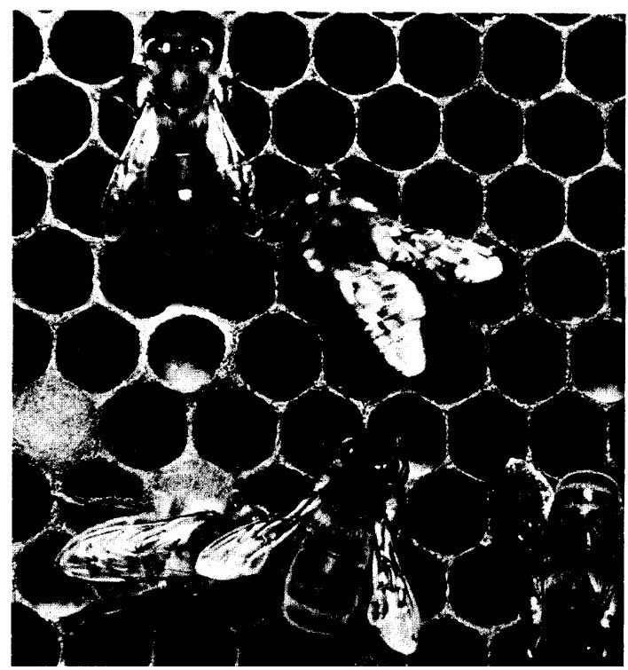
图48
我们从一个在艺术和自然界中都比其他图案更常见的二维装饰图案讲起：浴室地板砖常用的六边形图案。这里你们看到的六边形图案（图48）是普通的蜜蜂筑造的蜂巢。蜂巢的巢室为棱柱状，此照片是从棱柱正上方拍摄的。事实上，蜂巢由两层这样的巢室构成，它们的棱柱的开口方向正好相反。这两层的内底的榫接方式是个空间问题，我们待会再讨论，眼下我们只考虑更简单的二维问题。如果你把小球堆成一堆，它们会自己呈三维六边形构型。二维情形下的堆积就是把全等圆尽可能紧密地聚集在一起。先把全等圆彼此相切排成一排，如果再从上面丢下另一个圆，它将嵌在这一排的两个相邻圆之间，且这三个圆的圆心将构成一个等边三角形。从上面这个圆出发就可以构造出第二排圆，它们均嵌在第一排的两个圆之间（图49）；如此等等。这些圆之间空隙很小。一个圆与周围六个圆相切处的切线围成了与该圆外切的正六边形，如果用这样的六边形来代替内接圆，就得到了充满整个平面的正六边形构型。
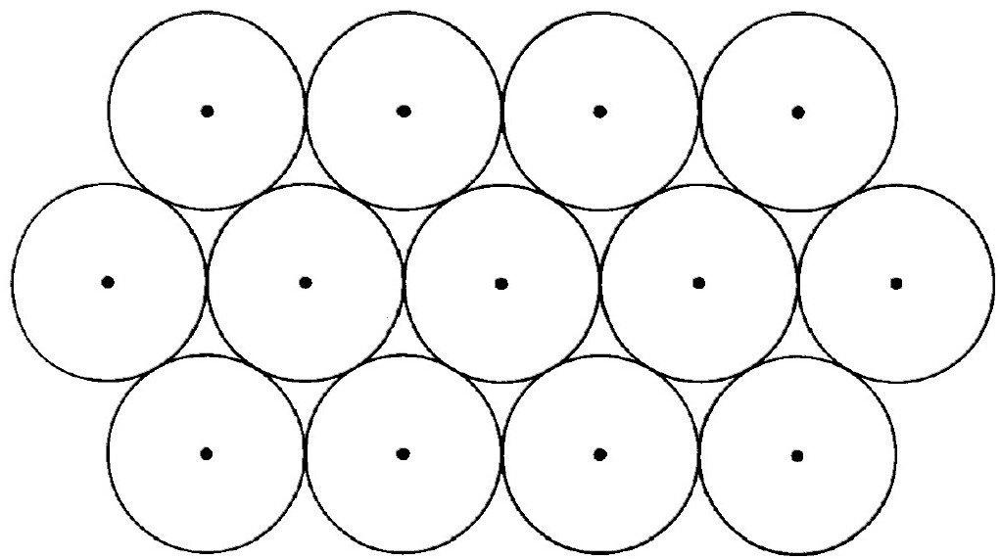
图49
根据毛细作用的规律，附在细金属丝围成的圈上的肥皂液膜具有面积最小的形状，亦即，它的面积比具有同样边界的其他任何表面的面积都小。吹入一定量气体后的肥皂泡呈球状，这是因为球面以最小的表面积包围了给定的体积。因此，由具有相同面积的二维气泡构成的泡沫呈六边形图案就不足为奇了，因为把平面划分为等面积的部分时，六边形图案的边界总长度在所有图案中是最小的。这里我们假定所讨论的问题已经简化为二维情形，比如，考虑夹在两块水平玻璃板之间的水平泡沫。如果泡囊有边界（生物学家称之为表皮层），就能观察到它由圆弧构成，每一段圆弧与相邻的细胞壁和下一段圆弧成120°角。这正是最小长度法则要求的。有了这一解释，看到诸如玉米的薄壁组织（图50）、我们眼睛的视网膜色素、很多硅藻的表面（图51展示了一种漂亮的标本），以及蜂窝等等这些迥然不同的结构中都有六边形图案，你就不会诧异了。蜜蜂的大小都差不多，是从里面不断旋转着建造巢室的，所以就把巢室建成了平行圆柱最密集的堆积，其横截面就好像圆的六边形图形一样。只要蜜蜂还在工作，蜂蜡就处于半流体状态，所以表面张力很可能超过蜜蜂身体从内部对蜂蜡施加的压力，于是这些圆就变成外接正六边形了（不过它们的角落处仍显示出圆形的某些残迹）。图52是人造蜂窝组织，由亚铁氰化钾溶液的微滴在明胶中扩散形成，你可以将其与玉米的薄壁组织加以比较。当然，它们形状的规则性有待改进，甚至某些地方出现的不是六边形，而是夹杂了五边形。图53和图54是另外两个具有六边形图案结构的人造组织，是我从最近一期《时尚》杂志（1951年2月刊）中信手拈来的。图55是海克尔称之为六边形空心藻（Aulonia hexagona）的放射虫的含硅残骸，它看上去像是在球面上（而不是平面内）布满了一种很规则的六边形图案。但根据拓扑学基本原理，六边形的网是不可能覆盖球面的。这一原理讨论的是把球面任意分割为沿着某些边彼此交界的区域，它告诉我们：区域的个数A，边的条数E，以及顶点（至少有三个区域相交的那些点）的个数C应满足关系式A+C-E=2。对于六边形网来说，我们有E=3A，C=2A，所以有A+C-E=0！我们确实看到，空心藻的一些网眼果真不是六边形，而是五边形。
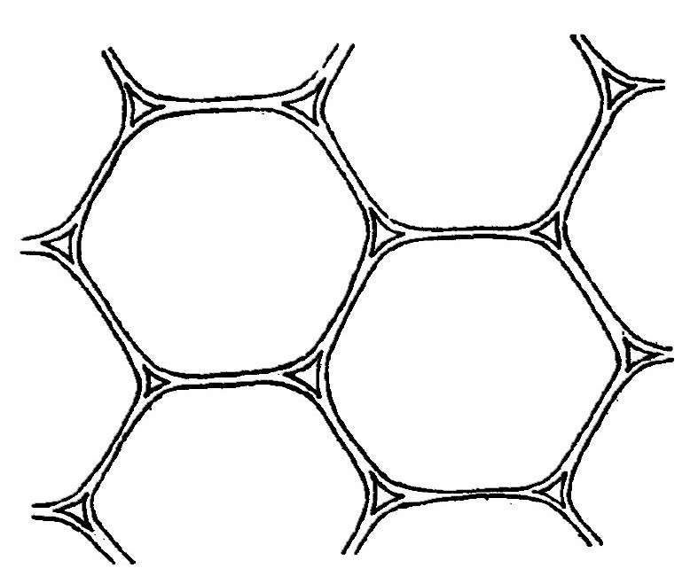
图50
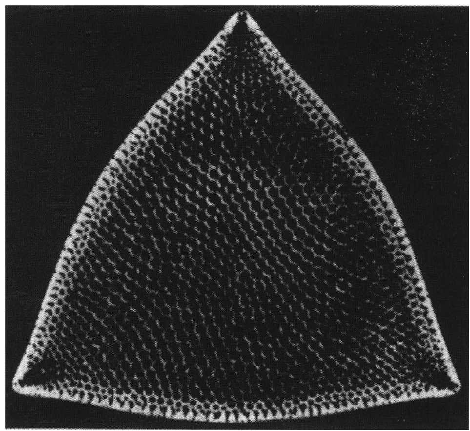
图51
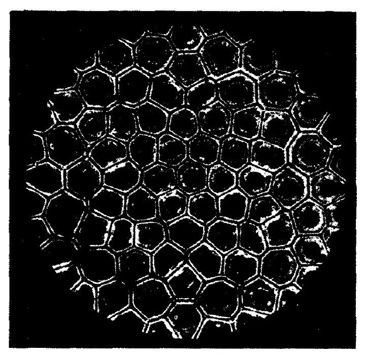
图52
图53
图54
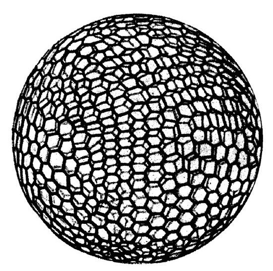
图55
现在我们从平面上圆的最密集堆积问题，转而讨论空间中相同球面或球体的最密集堆积问题。我们从一个球及过球心的“水平面”开始。在最密集堆积情况下，该球将与其他12个球相切正如开普勒所说，“像石榴中的石榴籽那样”），其中6个在该水平面上，另外3个在该水平面之下，还有3个在该水平面之上。[20]如果这样排列的球沿各自固定球心作均匀扩张，但彼此不能穿透的话，它们将会变成填满整个空间的斜方十二面体。注意，单个十二面体并不是正多面体，然而在相应的二维问题中我们得到的却是正六边形！蜜蜂的巢室就是由这样的十二面体的下半部构成的，而其六条垂直边延伸出去形成一个上端开口的六边形棱柱。关于蜜蜂窝的几何问题已经有大量论著了。蜜蜂奇妙的社会习性和几何天赋，引起了观察者和研究者的注意，并让他们赞叹不已。《一千零一夜》中的小蜜蜂说：“我的住宅是按照最严格的建筑法则建造的，就连欧几里得本人也从巢室的几何学研究中获益匪浅。”可能是马拉尔迪（Maraldi）于1712年首次进行了相对精确的测量；他发现蜜蜂巢穴底部的三个菱形都有约110°的钝角α，且这些菱形与立壁构成的角β大小也相同。他向自己提出了一个几何问题：菱形的角α应取何值，才能与角β完全相同？他得出的结果是α=β=109°28'，并由此认为蜜蜂早已解决了这一几何问题。在曲线和力学研究中引入最小值原理（the principles of minimum）后，α值自然而然地就由如何最节省地使用蜂蜡来决定了，因为建造体积相同而具有其他角度的巢室需要更多的蜂蜡。后来瑞士数学家塞缪尔·柯尼希（Samuel Koenig）证实了雷奥米尔（Réaumur）的这一猜想。柯尼希不知怎么的把马拉尔迪的理论值误认为是实测值，并发现自己根据最小值原理得到的理论值与之相差2（'这是因为他在计算
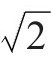
时采用的数表有误）。于是他得出结论说蜜蜂在解这一最小值问题时犯了2'的错误，且该问题超出了经典几何学的范围，需要用到牛顿和莱布尼茨的方法来解决。随后在法国科学院就该问题展开了讨论，该院终身秘书丰特内勒（Fontenelle）的一篇著名论断性文章作了总结，否认蜜蜂具有牛顿和莱布尼茨的几何才华，并给出了这样的结论：在应用这一最高深的数学工具时，蜜蜂遵从神的指引和命令。事实上，巢室并不像柯尼希设想的那么规则，就连在几度的精度内去测量这些角都很困难。但是一百多年后，达尔文（Darwin）却仍声称蜜蜂的建筑才能为“已知的本能中最为奇特的一种”，并补充道：“是自然选择（现在这个词代替了神的指引！）使其建筑技能臻于完美；就我们所知，蜜蜂的巢室在节省劳力和蜂蜡这两方面都尽善尽美。”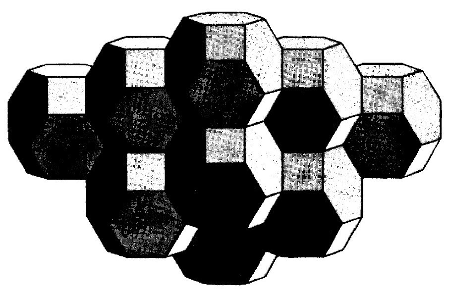
图56
将一个八面体的六个顶角以一种恰当的对称方式截掉的话，就能得到表面为6个正方形和8个六边形的十四面体。阿基米德（Archimedes）早就知道这种多面体了，后来俄国晶体学家费多罗夫（Fedorow）重新发现了它。通过适当的平移而得出的这种固体的复制品，可以填满整个空间而没有重叠或间隙，正如斜方十二面体那样（图56）。开尔文勋爵在巴尔的摩所作的系列演讲中指明了如何弯曲其表面和边才能满足最小面积条件。这样的话，把空间分割成大小相等、方向相同的这种十四面体时，获得的表面积体积比比表面为平面的菱形十二面体还小。我倾向于相信开尔文勋爵的构型给出了绝对极小值；但据我所知，这一点至今还没有得到证明。
现在我们再回到二维平面，更系统地研究具有双重无限和谐（double infinite rapport）的对称性。首先，我们必须把这一概念精确化。如前所述，平面的平行移动，即平移，构成一个群。确定给定点A移动后的位置A'，就完全确定了该平移。平移或者说向量
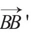
如果平行于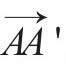
且长度相等，则二者完全一样。通常用符号+来表示平移的复合。因此，a+b就是先进行平移a，再进行平移b得到的结果。如果a将点A移到B，而b将点B移到C，那么a+b就将A移到C，可用平行四边形ABCD的对角线向量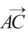
来表示。因为有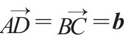
，以及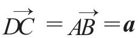
（图57），所以平移的复合（也可以说是向量的加法）满足交换律：a+b=b+a。向量的这种加法不过就是两个力a和b形成合力a+b所依据的平行四边形法则。我们有恒等向量或零向量o，它将每一点移动至自身。每一平移a都有其逆平移-a，使得a+（-a）=o。显然2a，3a，4a，……代表a+a，a+a+a，a+a+a+a，……对于任意整数n（正整数、零或负整数），用来定义倍数na的一般法则可用如下公式表示：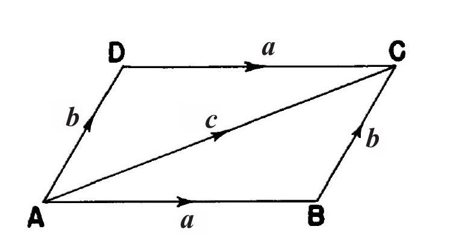
图57
（n+1）a=（na）+a，且0a=o
向量b=（1/3）a是方程3b=a的唯一解。因此，对于有着整数分子m和整数分母n的分数λ=m/n（比如2/3或-6/13），λa指的是什么已经很清楚了；根据连续性，λ是任意实数时（不管是有理数，还是无理数），λa的意思也很清楚。如果两个向量e1和e2的任意线性组合x1e1+x2e2都不是零向量o（除非实数x1和实数x2均为零），则称二者是线性无关的。平面之所以是二维的，因为其中的每一个向量r均唯一地表示成两个线性无关向量e1和e2的线性组合x1e1+x2e2。系数x1、x2称为r关于基（e1，e2）的坐标。固定一定点O作为原点（并固定向量基e1和e2），就可以通过关系式
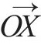
=x1e1+x2e2赋予每一点X两个坐标x1和x2；反之亦然，即坐标x1和x2确定了X在“坐标系”（O；e1，e2）中的位置。非常抱歉，我不得不用解析几何中的这些基本概念来折磨你们。笛卡儿（Descartes）发明解析几何的目的只不过是要给平面中的点X命名，以便区分和识别。这需要系统地来完成，因为平面中有无穷多个点；而且，点和人不一样，它们是完全相同的，所以这样做就更有必要了：只有给它们贴上标签才能区分它们。我们给它们取的名字正是数偶（x1，x2）。
除交换律以外，向量的加法——实质上指任意变换的复合——还满足结合律：
（a+b）+c=a+（b+c）
对于向量a，b，……与实数λ，μ，……的乘法，有如下法则：
λ（μa）=（λμ）a
以及下面两个分配律：
（λ+μ）a=（λa）+（μa），
λ（a+b）=（λa）+（λb）
你一定会问，从一个向量基（e1，e2）变换到另一个向量基（e'1，e'2）时，任意向量r的坐标（x1，x2）是如何变换的。向量e'1、e'2可以用e1、e2来表示，反之亦然：
e'1=a11e1+a21e2，e'2=a12e1+a22e2；
（1）
e1=a'11e'1+a'21e'2，e2=a'12e'1+a'22e'2；
（1'）
将任意向量r用这两个基来表示，有：
r=x1e1+x2e2=x'1e'1+x'2e'2
将（l）式和（l'）式代入上式，可发现相对于第一个基的坐标x1、x2与相对于第二个基的坐标x'1、x'2是通过下述两个互逆的“齐次线性变换”联系起来的：
x1=a11x'1+a12x'2，x2=a21x'1+a22x'2；
（2）
x'1=a'11x1+a'12x2，x'2=a'21x1+a'22x2
（2'）
坐标x随向量r而变化，但系数
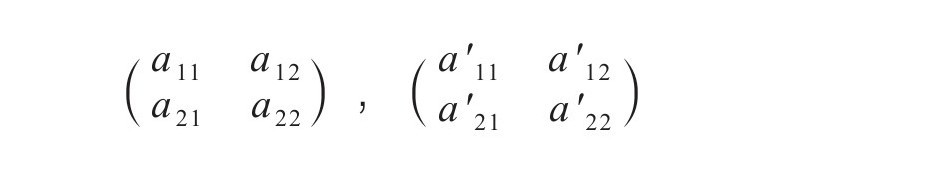
是常数。容易看出，像（2）式这样的线性变换具有逆变换的条件是，当且仅当它所谓的模a11a22-a12a21不等于0。
只要我们仅使用上述这些概念，即（1）向量的加法a+b，（2）数λ与向量a的乘法，（3）由两点A，B来确定向量
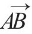
，以及由它们定义的概念，那我们研究的就是仿射几何（affine geometry）。在仿射几何中，任一向量基e1、e2均与其他向量基一样好。而向量的r长度|r|的概念就超出了仿射几何的范围，它是度量几何（metric geometry）的一个基本概念。任意向量r的长度的平方是其坐标x1、x2的一个二次型：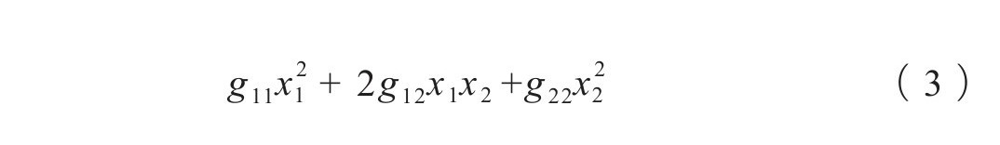
其中g11，g12，g22为常系数。这是毕达哥拉斯定理的基本内容。度量基本形式（3）是正定的（positive-definite），即对于任意变量x1、x2（x1=x2=0除外）来说，它都取正值。
存在一些特别的坐标系，即笛卡儿坐标系，使得该二次型具有最简单的形式：x21+x22；它们由两个长度均为1且相互垂直的向量e1、e2构成。在度量几何中，所有的笛卡儿坐标系都是同权的。两个笛卡儿坐标系之间的转换通过正交变换来实现，即通过一个齐次线性变换（2）、（2'），它使得形式
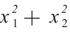
保持不变，即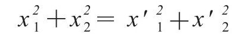
。但稍加修改，这种变换也可以解释为旋转的代数表示。如果笛卡儿向量基e1、e2经过绕原点O的旋转后变为笛卡儿向量基e'1、e'2，那么向量r=x1e1+x2e2就变为r'=x1e'1+x2e'2。但倘若我们自始至终都采用原基（e1，e2）为参照系，而把后者写成x'e1+x'2e2，你就看到坐标为x1、x2的向量变成了坐标为x'1、x'2的向量，这里
x1e'1+x2e'2=x'1e1+x'2e2
因此有
x'1=a11x1+a12x2，x'2=a21x1+a22x2
（4）
[数偶（x1，x2），（x'1，x'2）互换后的式（2）。]
如果用点代替向量，那么齐次线性变换就全部由非齐次线性变换代替。设任意一点X在两个坐标系（O；e1，e2），（O’；e'1，e'2）里的坐标分别为（x1，x2）、（x'1，x'2），我们有
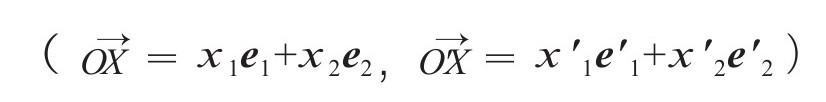
又因为
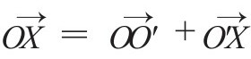
，所以有：xi=ailx'1+ai2x'2+bi（i=1，2）
（5）
其中我们令（
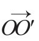
=b1e1+b2e2）。非齐次线性变换与齐次线性变换的区别就在于附加项bi。将点（x1，x2）变换至（x'1，x'2）的映射x'i=ailx1+ai2x2+bi（i=1，2）
（6）
可以是一个全等变换，前提是代表着相应向量映射的变换的齐次部分
x'i=ailx1+ai2x2，（i=1，2）
（4）
是正交的。（当然，这里的坐标是指同一个固定坐标系里的坐标。）这样一来，我们也可以称非齐次变换为正交的。特别是，向量（b1，b2）代表的平移由下式给出：
x'1=x1+b1，x'2=x2+b2
现在，我们回到平面有限旋转群的莱昂纳多式上来：
C1，C2，C3，……
D1，D2，D3，……
（7）
任意一个群Cn的操作的代数表达式与笛卡儿向量基的选取无关。但对于群Dn来说却并非如此；为使其代数表达式正规化，这里我们把位于某一反射轴上的向量取为第一基本向量e1。旋转群用笛卡儿坐标系统表示的话，就是正交变换群。它那由正交变换联系起来的在任意两个这种坐标系中的表达式，如我们所称，是正交等价的。因此，莱昂纳多的结论可以用代数语言表述如下：他编制了一张正交变换群的表，使得：（1）其中任意两个群互不正交等价；（2）任意正交变换有限群均正交等价于表中出现的群。简言之，他编制了由正交变换构成的互不正交等价的有限群的完整列表。把简单的情况说得如此复杂似乎没有必要；但其好处不久就可看到。
装饰对称性考虑的是平面中全等映射的不连续群。如果这样的一个群Δ包含平移，再要求其具有有限性就不合理了，因为平移a（非恒等变换o）的迭代会给出无限多个平移na（n=0，±1，±2，……）。因此我们用非连续性来代替有限：要求群中除了恒等变换自身之外，不存在可任意接近恒等变换的变换。换言之，存在一个正数∈，使得群中相应数字
介于-∈到∈之间的变换式（6）只能是恒等变换（对于后者来说，所有这些数均为0）。群里的平移构成了平移的一个不连续群Δ。对于这样一个群，存在下述三种可能性：一是只有恒等变换o；二是所有的平移都是某基本平移e≠o的迭代xe（x=0，±1，±2，……）；三是这些平移（向量）组成一个二维点阵，亦即由两个线性无关向量e1、e2的线性组合x1e1+x2e2构成，其中x1、x2为整数。第三种情况即是我们感兴趣的双无限和谐。这里向量e1、e2构成我们所谓的点阵基。选一点O作为原点；点阵中所有平移作用于O得到的点，构成了一个平行四边形点阵（图58）。
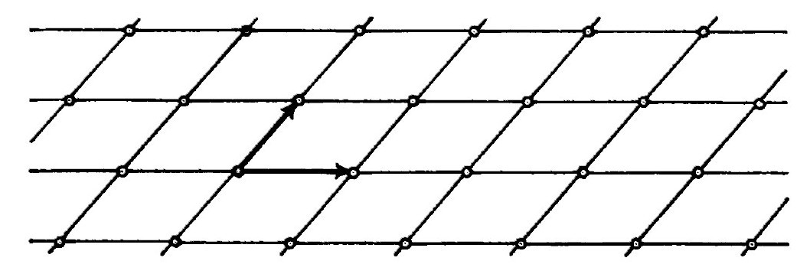
图58
我们立即会问，对于一个给定的点阵，点阵基是可以任意选择的吗？如果e'1、e'2是另一组这样的基，那么必然有：
e'1=a11e1+a21e2，e'2=a12e1+a22e2
（1）
其中aij都是整数。其逆变换（1'）中的系数也必须是整数，否则e'1、e'2就构不成一个点阵基。对于坐标，我们得到两个互逆的线性变换（2）和（2'），它们具有下列整系数：
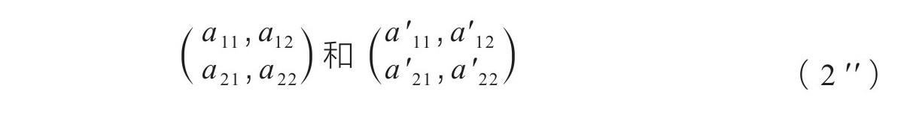
如果具有整数系数的齐次线性变换具有属于同样类型的逆变换，则称为幺模变换；不难看出，具有整数系数的线性变换当且仅当其模a11a22-a12a21等于1或-1时才是幺模变换。
我们可以这样来确定双重无限和谐所有可能的不连续全等群：选定一点O作为原点，并用O在群Δ中的平移的作用下形成的点阵L来表示这些平移。群中的任一操作，均可看作绕O的一个旋转再加上一个平移。其中前一部分，即旋转部分，把点阵变成了其自身。而且这些旋转部分构成了一个不连续的，因此也是有限的旋转群Γ={Δ｝。用晶体学家的术语来说，正是这个群确定了该装饰的对称类。Γ必然是莱昂纳多表（1）中的某个群：
Cn，Dn（n=1，2，3，……）
（8）
只是其操作使点阵L变为了其自身。旋转群Γ与点阵L之间的这一关系对它们两者都施加了一定的限制。
就Γ而言，它只能是表中与n=1，2，3，4，6相对应的那些群。注意，n=5不在此列！因为点阵允许180°旋转，所以使其保持不变的最小旋转应该是180°的一个整除部分，或者说具有下列形式：
360°除以2或4或6或8……
我们必须证明8和8以上的数字都不满足。现在来讨论n=8的情况。设A为所有非O阵点中距离O最近的一个点（图59）。然后将平面绕O点以每次1/8周角进行一次又一次旋转，则从A出发可以得到整个八边形A=A1，A2，A3，……，且这些顶点均为阵点。因为
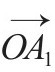
、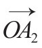
是点阵向量，所以二者之差，即向量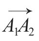
也属于点阵，或者说由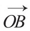
=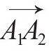
确定的点B也应是一个阵点。然而B比A=A1距离O更近，这就前后矛盾了。事实上，正八边形的边A1A2比半径OA1更短。因此对于群Γ而言，只存在下述10种可能性：C1，C2，C3，C4，C6；D1，D2，D3，D4，D6
（9）
不难看出，对于其中每一个群来说，都存在在群变换下保持不变的点阵。
显然，对于C1和C2来说所有点阵均如此，因为所有点阵在恒等变换和180º旋转作用下均保持不变。现在我们来考虑D1，它由恒等变换和相对于过原点O的轴l的反射组成。对于该群来说，只有两种点阵保持不变：长方形和菱形点阵（图60），将平面沿平行和垂直于l的线分割成全等的长方形可得长方形点阵，长方形的顶点即阵点。左下顶点为O的基本长方形中以O为起点的两条边e1、e2构成了点阵的自然基。长方形点阵的对角线分割出来的全等菱形构成了菱形点阵。左边顶点为O的基本菱形的两条边构成了点阵的基。阵点是顶点O和长方形的中心点。（托马斯·布朗把按这种菱形点阵排列植树的方法称为梅花形五点植树法，考虑的是梅花形是其基本构型，尽管这种点阵与数字5其实没有什么关系。）基本矩形或菱形的形状和大小是任意的。
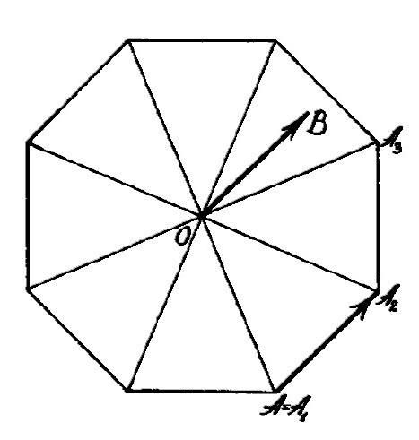
图59
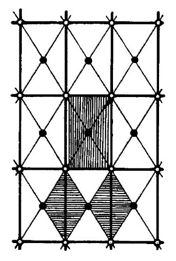
图60
找到10个可能的旋转群Γ和在群中的旋转作用下保持不变的点阵L之后，还需要将Γ和相应的L联系起来，以获得完整的全等映射群。更深入的研究表明，虽然Γ只有10种可能性，但是对于整个全等群Δ来说，却有17种本质上互不相同的可能性。因此，对于具有双重无限和谐的二维装饰而言，共有17种本质上互不相同的对称性。在古代的装饰图案中，尤其在古埃及的饰物中，存在所有这17个对称群的例子。对于这些图案反映出的几何想象力和创造性，怎样称赞都不为过。他们的创造在数学上非常重要。这些装饰艺术隐藏着人类所掌握的最古老的高级数学。诚然，完全抽象地表述其中隐藏的问题所需要的概念，亦即变换群的数学概念，直到19世纪才出现；但只有在变换群的基础上，我们才能证明古埃及匠人已经穷尽了所有17种可能的对称性。十分奇怪的是，这一结论直到1924年才由现在在斯坦福大学执教的乔治·波利亚（George Pólya）给出证明。[21]虽然阿拉伯人对数字5进行了长期的摸索，却无法在具有双重无限和谐的装饰设计中真正嵌入五级中心对称图案。不过，他们尝试了各种具有迷惑性的折衷方案。可以说，他们通过实践证明了五边形对称在装饰中是不可能实现的。
除式（9）所列的10个群之外不存在其他与不变点阵相联系的旋转群——虽说这句话的意思表达得很清楚，但对最多只有17个不同的装饰群这一论断还需要做些解释。比如，如果Γ=C1，则群Δ就只包含平移；不过此时任意点阵都是可能的，因为由点阵的两个基本向量所张成的基本平行四边形可具有任意形状和大小，于是就有连续的无限多种可能性可供选择。我们将所有这些可能性视为一种情况，这才得出数字17；但这样做是对的吗？这就需要用到解析几何。如果用仿射几何来分析的话，平面具有两个结构：（i）度量结构，每个向量r都有长度，其平方是用向量坐标的正定二次型（3），即度量基本型（the metric ground form）来表达的；（ii）点阵结构，这是因为装饰图案赋予了平面一个向量点阵。通常的做法是先考虑度量结构，再引入笛卡儿坐标系，使得度量基本型具有唯一的正则化表达式
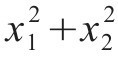
；但在不变点阵的连续流形的代数表示中还保留有一种可变元素。不过，我们可以不通过仅引入笛卡尔坐标系赋予度量以坐标，而是先考虑点阵结构，并选取e1、e2作为点阵的基，从而赋予点阵以坐标，这样用相应坐标x1、x2来表达的点阵就完成了唯一且确定的正则化。事实上，现在的点阵向量正好是坐标为整数的那些向量。一般说来，我们不能同时拥有以下二者：度量基本型呈正则形式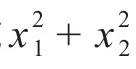
的一个坐标系，以及由坐标x1、x2为整数的所有向量构成的点阵。现在我们就尝试后者，即构造点阵，因为从数学上讲比前者更有优势。我认为，下述分析是所有结构和形态研究的基础，非常重要。再一次考察D1。如果不变点阵是矩形，且按上述自然方式来选取点阵基，那么D1就由恒等变换和下述变换组成：
x'1=x1，x'2=-x2
此时的度量基本型可以是具有
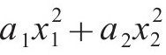
这一特殊形式的任意正定形式。如果不变点阵是菱形点阵，并把基本菱形的边选为点阵基那么D1就由恒等变换和下述变换组成：x'1=x2，x'2=x1
其度量基本型可以是具有
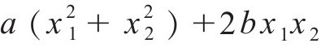
这一特殊形式的任意正定形式。然而现在我们得到了两个具有整系数的线性变换群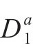
和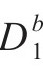
而不是D1，它们虽然是正交等价的，却不再是幺模等价的。其中一个群所包含的两个操作的系数矩阵为另一个群所包含的两个操作的系数矩阵为
对于两个齐次线性变换群，如果它们都代表相同的操作群，只是所采用的点阵基不同，亦即可以通过坐标的幺模变换转换为对方，当然就称作是幺模等价的。
在适应点阵的坐标系中，Γ的操作现在是具有整数系数aij的齐次线性变换（4）；因为每一个操作在把点阵变换为其自身时，只要x1和x2取整数值，x'1和x'2就取整数值。将幺模等价的线性变换群视为彼此相同，点阵基就可以任意选取了。除了具有整数系数外，Γ的变换还会使某些正定二次型（3）保持不变。但这并不是新增加的限制条件；事实上可以证明，对于任意实系数的线性变换有限群，都可以构造出在这些变换下保持不变的正定二次型。[22]那么，在双变量均为整数系数的前提下，存在多少个不同的（即幺模不等价的）线性变换有限群呢？是否还是式（9）中的10个呢？不！现在更多了，比如说D1，我们已经看到，它已分解为不等价的
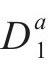
和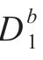
了。D2和D3也同样会分解，所以结果就是，恰好有13个具有整数系数的幺模不等价线性有限群。从数学观点来看，真正令人感兴趣的是这个结果，而不是式（9）所列的10个具有不变点阵的旋转群。最后一步，我们还要引入操作的平移部分，这样就得到了17个幺模不等价的不连续群，构成它们的非齐次线性变换包含b1和b2为整数的所有下述平移
x'1=x1+b1，x'2=x2+b2
而又不包含所有其他平移。这最后一步几乎没什么困难，有待作出的说明也是关于剔除平移部分而得到13个齐次变换有限群Γ的。
至此我们只考虑了平面的点阵结构。当然，不能一直不提平面的度量结构。正是在这里，要考虑问题的连续性因素。对于这13个群中的每一个Γ，都存在不变的正定二次型：
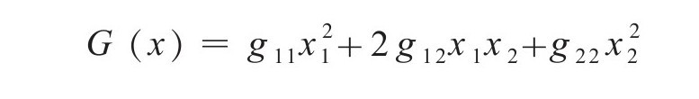
这样一个形式是由其系数（g11，g12，g22）表征的，且并不由Γ唯一地确定；比如，G（x）可以由cG（x）代替，其中c是一个正的常数因子。在Γ的操作下，保持不变的所有正定二次型G（x）构成了一个性质简单的连续凸“锥”，维度为1、2或3维。比如，对于
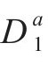
和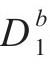
来说，分别就有由形式为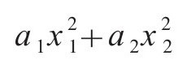
和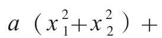
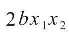
的所有正定型构成的二维流形。度量基本型总是具有不变形式的流形中的一个。在对装饰群Δ的完整描述中，我们已经把那些离散的特性与能在一个连续流形上变化的特性明确区分开来。离散特性已通过用适应点阵的坐标来表示群而展现出来，结果表明该离散特性是17个不同的群之一。其中，每一个群都有一个由度量基本型G（x）的各种可能性构成的连续体与之相对应，而实际的度量基本型即从中选出。现在，选择适应点阵而非适应度量的坐标系的优点通过可变基本型G（x）沿一个简单的凸连续流形而变化即可看出；而采用适应度量的坐标系的话，以可变基本型的形式呈现的点阵L将变成由几部分构成的连续体，如D1所示。先考虑下剔除平移后的齐次群Γ={Δ}，再考虑下完整的装饰群Δ，这一优点就完全看出来了。将离散的和连续的进行分离，在我看来，是一切形态学的一个基本问题，而将这两种特性明显区分开来的装饰和晶体的形态学就是一个典范。
讨论了所有这些多少有点抽象的数学概念后，现在来看几幅具有双重无限和谐的表面装饰图。在墙纸、地毯、地砖、镶木地板、各种衣料，特别是印花布等等中都能找到它们。一旦打开视界，你将惊奇于日常生活中无数的对称图案。阿拉伯人曾是几何装饰艺术最伟大的大师。具有阿拉伯渊源的建筑物（比如格拉纳达的阿尔汗布拉宫）墙壁上的灰泥装饰图案非常多，令人叹为观止。
为了描述二维装饰图案，需要知道二维情况下的全等映射是什么样的。运动可以是平移，也可以是绕点O的旋转。如果我们的对称群中有这样的旋转，且群中所有绕O点的旋转均为360°/n的整数倍，那么我们就称O为重数（multiplicity）n的极点，或简写为n-极点。我们知道，n的值只能取2、3、4、6。一个非真全等，要么是相对于直线l的反射，要么是这样一个反射与沿l的平移a的复合。如果非真全等在我们的群中，则l在两种情况下分别称为轴和滑移轴。对于后一种情况来说，全等的迭代给出向量为2a的平移；因此滑移向量a必然等于群中一个点阵向量的1/2。
第一幅图（图61）画的是六边形点阵，现在我们就从它出发展开讨论：它具有非常丰富的对称性，有重数分别为2、3和6的极点，图中分别用点、小三角形和小六边形来表示。连接两个六重极点的向量是点阵向量。图中的直线都是轴。也有滑移轴，只是图中并未标示出来；它们平行于轴，并位于相邻两根轴中间。可能的六边形类型的对称群有五个，在每一个6重极点上分别放上简单的图案6、6'、3'、3a或3b即可得到。图案6和6'保留了极点的重数6，只是6'破坏了对称轴。图案3'、3a或3b将这些极点的重数减小为3；其中3'导致该图没有对称轴；3a使得对称轴通过每一个3重极点；而3b使得对称轴只通过重数为6的那些点（占总数的1/3）。相应的齐次群分别为D6、C6、C3、
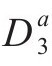
和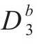
，其中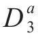
和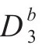
是D3在适应点阵的坐标系中所呈现出的两种幺模不等价形式。图61
图62
图63
接下来请看一些来自摩尔文化、埃及和中国的实际装饰图案。图62是14世纪建于开罗的一座清真寺的窗户，它属于六边形类D6对称型。其基本图形是三叶结，工匠们以超凡的艺术手法用种种组合把它们交织起来。几乎不曾截断的线条沿着水平、60°、120°三个方向穿越了整个图案；这些线条的中线都是滑移轴。很容易就能找出那些是普通轴的直线。格拉纳达的阿尔汗布拉宫中有一座百合花大厅，装饰其壁龛后部的彩色贴砖的图案（图63）就没有这样的轴。这里的群是3'或6'，视是否考虑颜色而定。由某群Δ所表示的几何图案的对称性，通过涂色而降为由Δ的一个子群所表示的更低阶的对称性，是装饰艺术中更精细的手法之一。大家所熟悉的铺砖路面图案（图64）具有正方形类D4对称性；有趣的是，图案中过4重数极点没有普通轴，只有滑移轴。下一幅图（图65）所示的埃及装饰，以及两幅摩尔装饰图案（图66）也具有相同的对称性。欧文·琼斯（Owen Jones）的《装饰艺术》（Grammar of Ornaments）是这方面的一部重要著作。丹尼尔·史茨·戴（Daniel Sheets Dye）的《中国窗格艺术》（Grammar of Chinese Lattice）更具特色，讨论的是中国人用来支撑窗纸而设计的窗格。我引用了该书中别具特色的两幅图案（图67和图68），其中一幅属六边形类，另一幅属D4型。
我希望能详细分析一下其中一些装饰图案。但这样做需要一个前提，即先对那17个装饰群进行明确的代数描述。这次讲座的目的是介绍装饰（和晶体）形态学的一般数学原理，而不是对单个装饰图案进行群论分析。限于时间，无论是抽象方面还是实体方面，我都没能作充分的介绍。我尽力解释了一些基本的数学概念，并向你们展示了一些图片：我指明了架在二者之间的桥梁，却不能带领你们一步步跨过去。
图64
图65
图66
图67
图68